The Old Jack Pine site contained a large flux tower, an SRC AMS (met) tower, and many other instruments. It also had a Terrestrial Ecology (TE) tower that topped out in the canopy of large pine trees. This allowed researchers to take samples from within the canopy, and to make measurements using the living trees themselves. View an aerial photo-map of the NSA-OJP site.
 Location of the NSA within Canada. |
 Location of the Old Jack Pine site within the NSA. |
 Map of the Northern Study Area Old Jack Pine site. | |
| NSA Old Jack Pine Flux Tower also called NSA-OJP-FLXTR (click here for detailed info) |
||
| Latitude: 55.92842 | UTM Easting: 523496.2 | BOREAS X: 768.494 |
| Longitude: -98.62396 | UTM Northing: 6198176.3 | BOREAS Y: 617.236 |
| Elevation (ASL): 255.1 m | UTM Zone: 14 | |
| 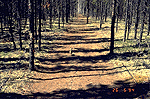 The dirt road leading to the NAS-OJP site | 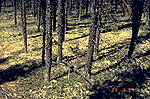 Jack pines and ground cover |
| 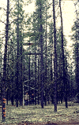 Canopy access tower near the road | 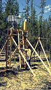 Rain gauge |
| 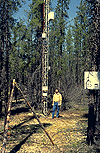 Base of the SRC Met tower | 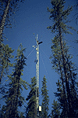 SRC Met tower |
| 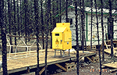 Laser Ceilometer | 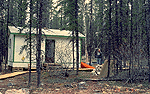 Hut and Dave Fitzjarrald |
| 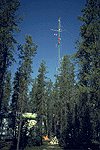 Hut and flux tower |
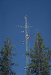 Flux tower and climber |
Near the NSA-OJP site was the NOAA RASS Doppler radar/lidar, run by AFM-6. It measured profiles of wind, turbulence quantities, and temperature as functions of time. The radar also measured the structure of clouds overhead.
| 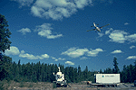 The NOAA Doppler Radar near NSA-OJP | 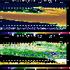 A NOAA Doppler Radar Image (with comments) |
Related Pages:
 BOREAS Home
BOREAS Home
 Study Region Overview
Study Region Overview
 Northern Study Area (NSA)
Northern Study Area (NSA)
 NSA Old Jack Pine Site (NSA-OJP)
NSA Old Jack Pine Site (NSA-OJP)
 SSA Old Jack Pine Site (SSA-OJP)
SSA Old Jack Pine Site (SSA-OJP)
Revison Date: January 25, 1999
{kind=link}
{kind=link}
{kind=link}
{kind=link}
{kind=link}
{kind=link}
{kind=link}
{kind=link}
{kind=link}
{kind=link}
{kind=link}
{kind=link}
{kind=link}